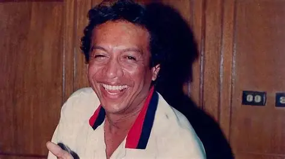
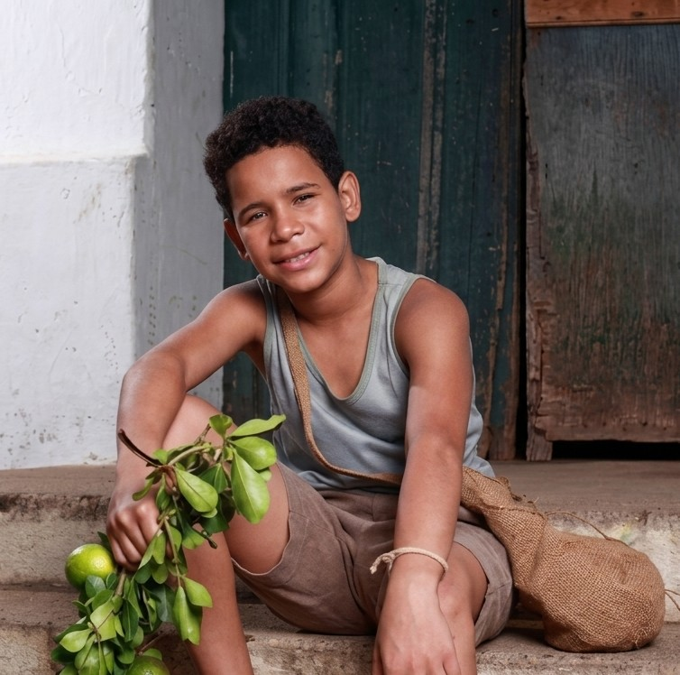
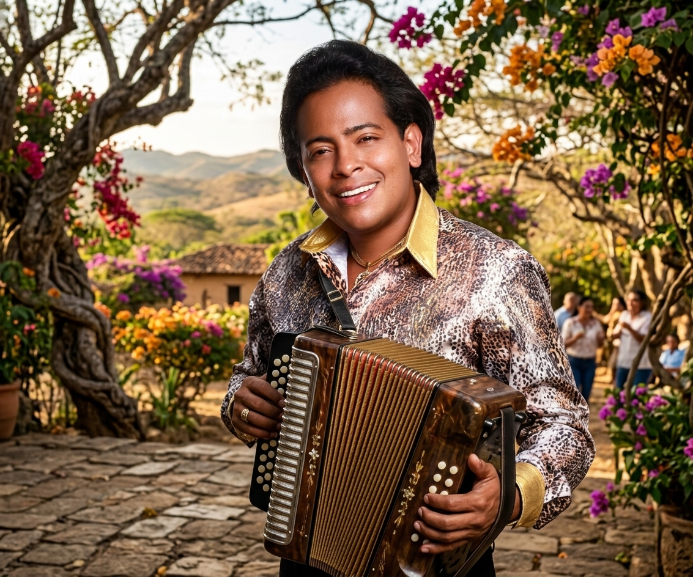
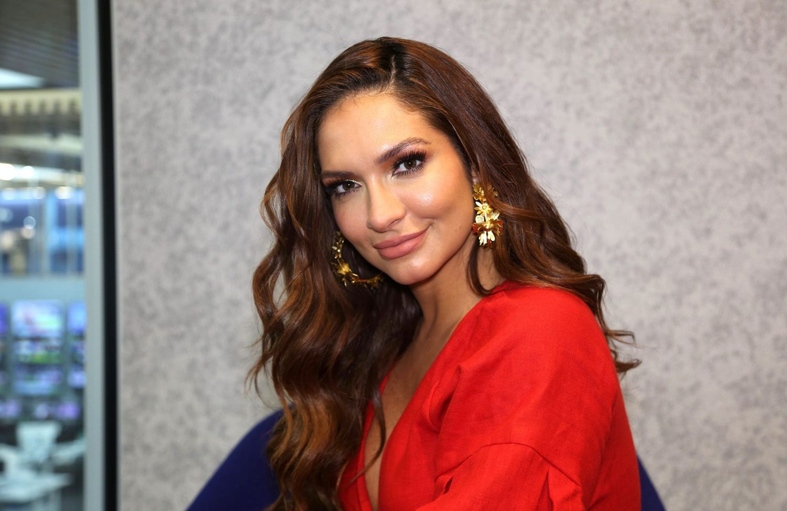
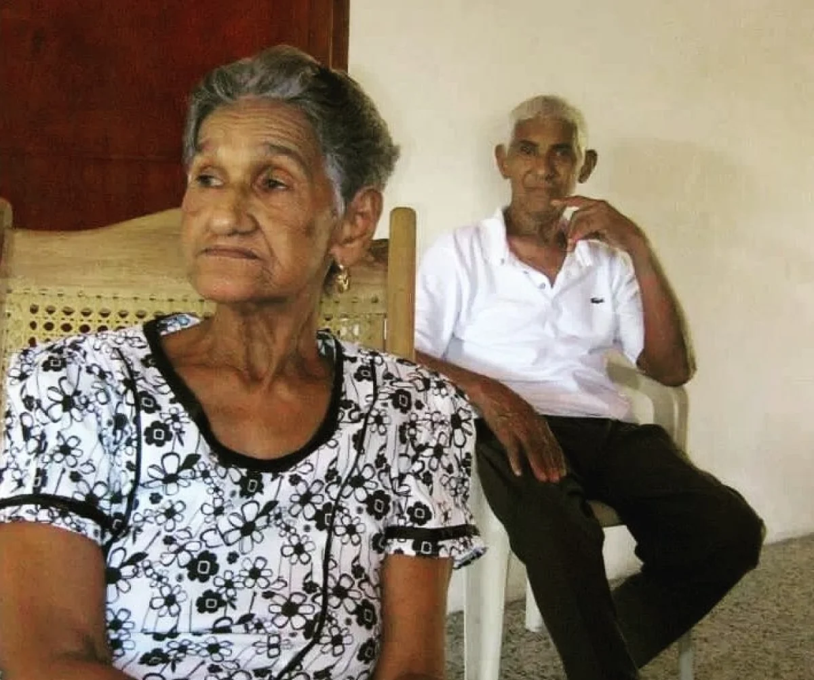
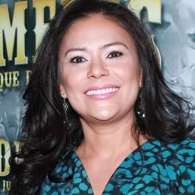
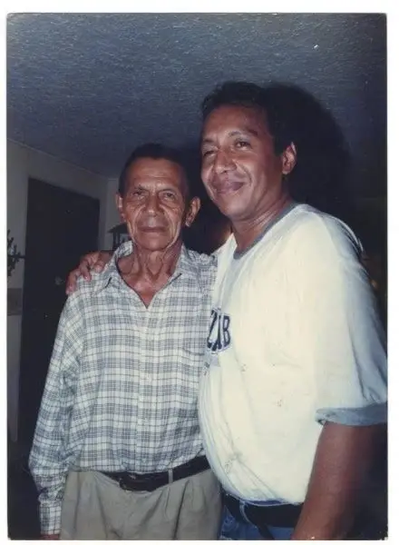
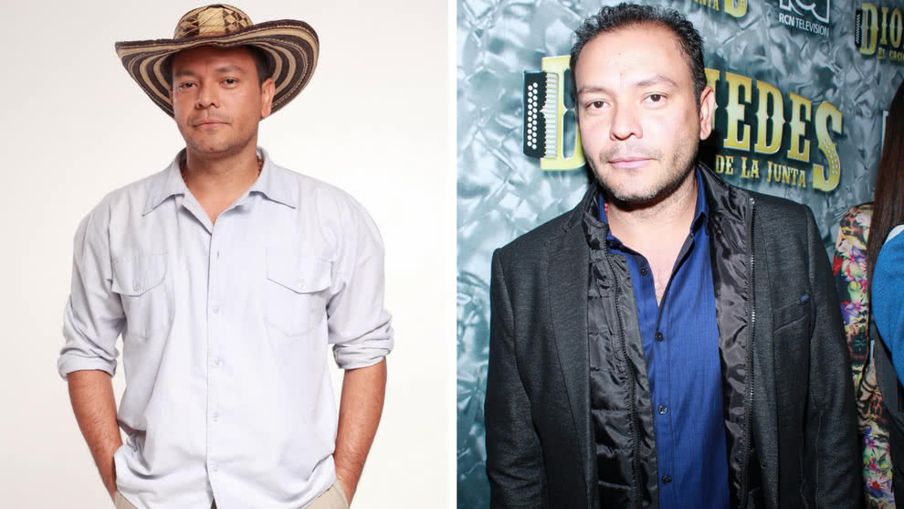

Estas En Personajes
Personajes Que Estuvieron En La Telenovela
Diomedes, el Cacique de La Junta

Diomedes Diaz (interpretado por Orlando Liñán en su etapa adulta y Juan Bautista Escalona de niño):
Es el protagonista absoluto de la historia. Desde sus humildes comienzos en Carrizal luchando contra la pobreza y las dificultades del campo, refleja una personalidad arrolladora, alegre, romántica y profundamente bohemia. Su talento natural para componer y cantar vallenato lo lleva a la cima de la fama, convirtiéndolo en un ídolo de multitudes. Sin embargo, la trama también muestra su lado más vulnerable: sus excesos, las consecuencias de su vida de parrandas, sus múltiples relaciones amorosas y los duros momentos judiciales y personales que marcaron su declive físico y su legado
Juan Bautista (Niño)

Orlando Liñan (Adulto)

Lucia Arjona
Lucía Arjona (interpretada por Kimberly Reyes y Laura Rodríguez, inspirada en Patricia Acosta):
Es el primer gran amor de Diomedes y la musa de muchas de sus canciones más icónicas (como "Tres canciones"). Proviene de una familia con una mejor posición económica de la región, lo que genera resistencia por parte de su padre. Lucía representa la abnegación, el sufrimiento de la pareja que soporta las infidelidades y las ausencias del artista debido a su carrera musical y su debilidad por las mujeres, siendo además la madre de varios de sus hijos más queridos, como el fallecido Martín Elías.
Kimberly Reyes (Adulto)

Laura Rodríguez (Niña)

Elvira Maestre

Interpretada por Adriana Ricardo:
Es la madre de Diomedes y uno de los pilares emocionales más importantes de su vida. Representa a la matrona guajira fuerte, protectora, de profunda fe y sabiduría popular. Siempre estuvo al lado de su hijo para aconsejarlo, consolarlo en los momentos de mayor crisis y recordarle sus raíces humilde cuando la fama amenazaba con deslumbrarlo
Adriana Ricardo

Rafael Maria Diaz

Interpretado por Carlos Vergara:
El padre de Diomedes. Es un hombre de campo, de carácter fuerte, trabajador y de pocas palabras. Aunque al principio le costaba entender las aspiraciones artísticas de su hijo y prefería que se enfocara en las labores agrícolas de la región, con el tiempo termina siendo testigo y parte del orgullo familiar al ver el éxito descomunal que alcanza "El Cacique"
Carlos Vergara
